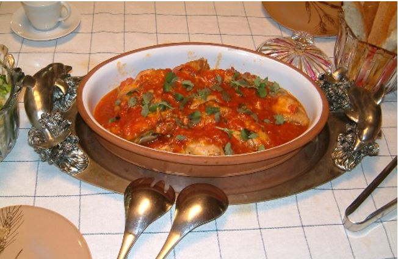
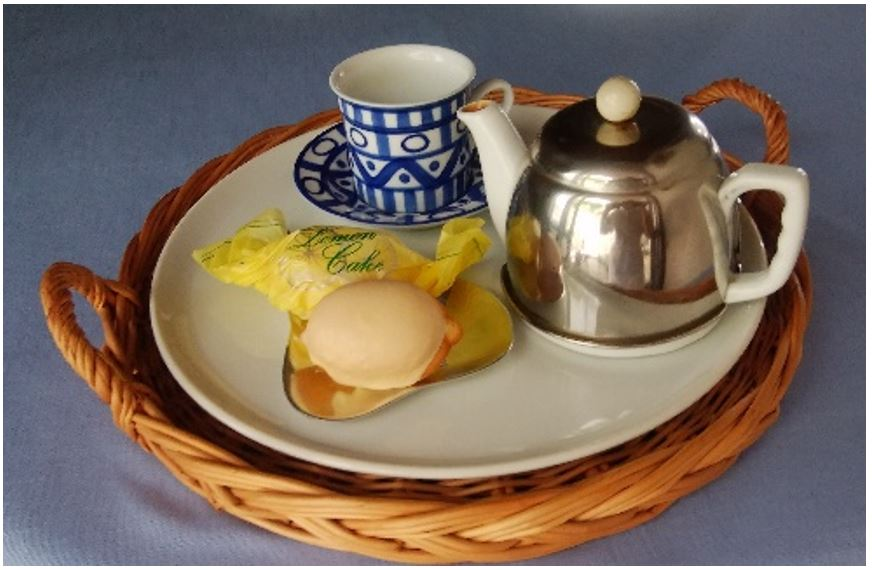
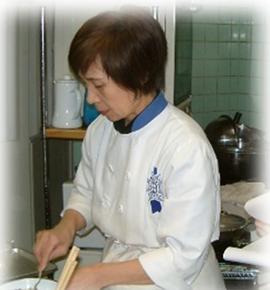

スタジオ・クレエは25年前より、ここ福岡市中央区大名で料理教室を開講しています。
マンションの一室で家庭的な雰囲気の中、初心者からプロの方まで
和食・洋食・中華・デザート・テーブルセッティング・季節のお料理など、幅広いレッスンを行っています
「本物を伝えたい」の思いのもと、 旬の食材を使った料理と、メニューに合わせたテーブルセッティングをお教えします。 調理後はゆっくりと試食でき、余った料理はお持ち帰りができます。 ソース類などは他の料理への応用方法をお伝えしていますので、食材を無駄にしない料理法が学べます。
グループレッスン・
個人レッスン はもちろん、下記のような様々な
オプション も行っています。
■ワイン教室 現在は月に1回のペースの開講です。旬のお料理を頂きながらワインについてレクチャー致します。 ■紅茶教室 脇田先生による本格的なティークラスです。詳しくはこちらからどうぞ。 ■ケータリング 立食から着席まで、大小様々なパーティーに合わせ、本格料理をご提供します。 ■引き菓子作り 結婚式の引き菓子をご自分で作ってみませんか。ケーキ作りはもちろんラッピングまで、ご指導致します。 ■食事会(女子会) 料理教室を利用して、お友達同士で「料理＋試食＋飲み会」はいかがでしょうか。 ■夕食代行 単身者や出張中の方向けに、1週間分の夕食を冷蔵・冷凍保存してサポートします。 ■レシピ開発 ご希望の食材で、新しいレシピを作成します。スーパーでのイベント用レシピ開発などの実績があります。 ■商品開発 企業やプロの方対象です。道の駅でのお土産品の開発などの実績があります。 最近では、Makuake(マクアケ)の「日本一の五島の椿花でジャムとドレッシングを」のプロジェクトの商品開発に携わりました。
講師紹介

プロフィール
料理好きが高じ、専業主婦から1985年(42才)で「中村調理製菓専門学校」を卒業し、
卒業後は「レストランウエディング」でパーティー料理のチーフシェフとして勤務。1991年(48才)の時にパリの
「ル・コルドン・ブルー」に短期留学し、帰国後は食品会社のフードコンサルタントやレシピ開発・料理指導などに従事。
現在は料理教室を中心に、食に関する様々な活動行っております。
開講以来、折々の季節感を大切に一度きりのオリジナルレシピでレッスン致しております。